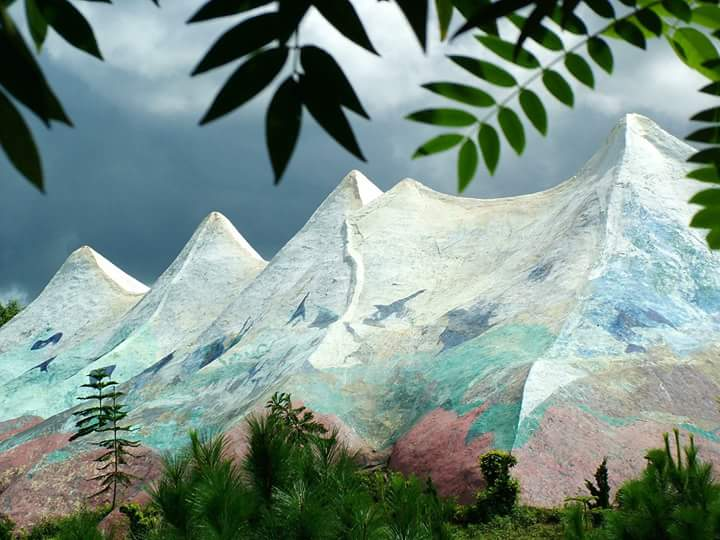
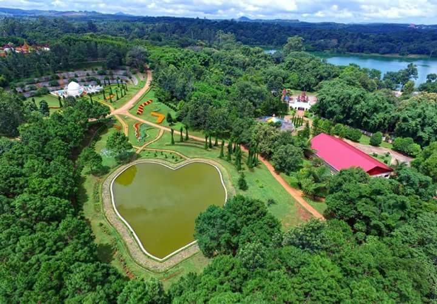
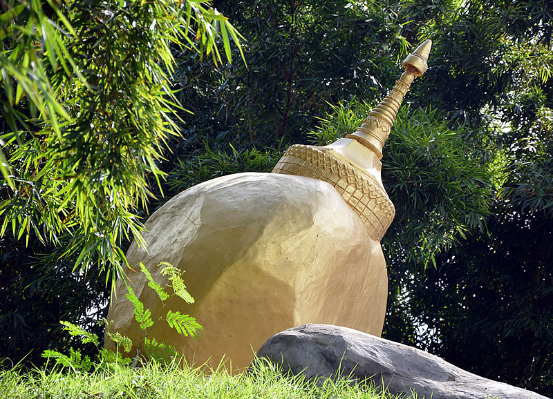
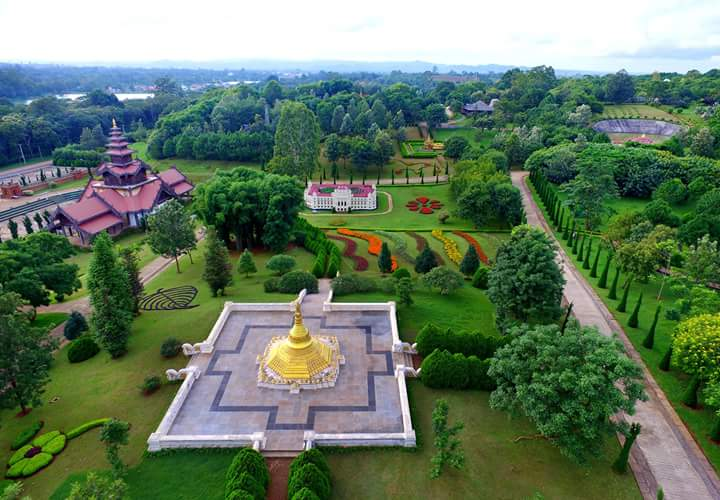
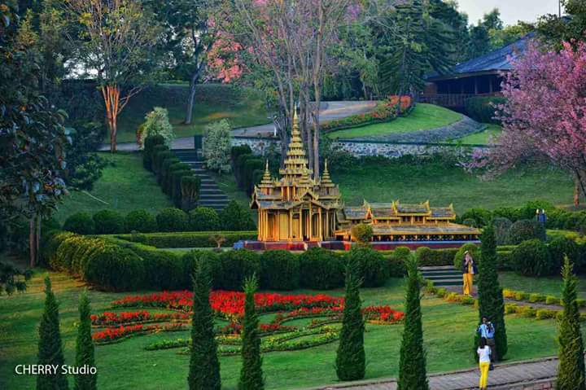
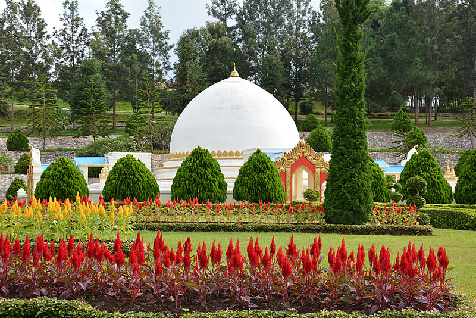

Kachin State☗ Khakaborazi Mountain
| Location | - Kachin State |
| Height | - 40 feet |
| Notable Fact | - Hightest Mountain
in Myanmar |
| Scale | - 1:480 |
|

Kayah State☗ Thiri Mingalar(Cleft Rock)
| Location | - Loikaw, Kayah State |
| Height | - 120 Feet |
| Scale | - 1:6 |
|

Kayain State☗ Zwe Ga Bin Mountain
| Location | - Hpa-an, Kayain State |
| Height | - 30 feet |
| Scale | - 1:80 |
|

Chin State☗ Rih Dil in Chin State
| Location | - Falam Township, Chin State |
| Actual Size | - 150 acre |
| Model Size | - Area 10,000 Square feet,
Depth of water 4 feet |
|

Mon State☗ Kyaik Htiyo Pagoda
| Location | - Kyaik Hto Tsp, Mon State |
| Size | - (Height)Rock 26 feet 9 inches,
pagoda 22 feet 5 inches |
| Scale | - 1:5 |
|

Rakhine State☗ Shithaung Temple
| Location | - Myauk Oo, Rakhine State |
| Actual size | - Length 160 feet, Breadth 124 feet, Height 86 feet |
| Scale | - 1:5 |
|

Shan State☗ Gokteik viaduct
| Location | - Shan State |
| Size | - 20 feet |
| Scale | - 1:113 |
|

Mandalay Region☗Mya Nann San Kyaw Palace
| Location | - Mandalay, Mandalay Region |
| Size | - 4 feet |
| Scale | - 1:50 |
|

Yangon Region☗ Shwedagon Pagoda
| Location | - Yangon, Yangon Regin |
| Size | - 18 Feet |
| Scale | - 1:18 |
|

Bago Region☗ Kanbawzathadi Palace
| Location | - Bago, Bago Regin |
| Size | - 18 feet |
| Scale | - 1:18 |
|

Sagaing Regin☗ Kaung Hmu Daw Pagoda
| Location | - Sagaing, Sagaing Regin |
| Size | - 21 feet |
| Scale | - 1:9 |
|

Magwe Regin☗ Oilfield
| Location | - Magwe Regin |
| Scale | - 1:5(Approximately) |
|

Ayeyarwady Regin☗ Maw Tin Soon Pagoda
| Location | - Nga Pa Taw Township, Pathein District, Ayeyarwady Regin |
| Size | - Height 89 feet 9 inches |
| Scale | - 1:18 |
|

Tanintharyi Regin☗Statue of King Bayint Naung
| Location | - Tanintharyi Regin |
| Height | - Height of pedestal 14 feet, Height of statue 15 feet 10 inches |
| Scale | - 1:3 |
|
 Location
Location